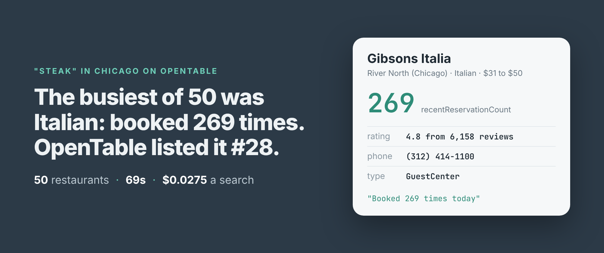
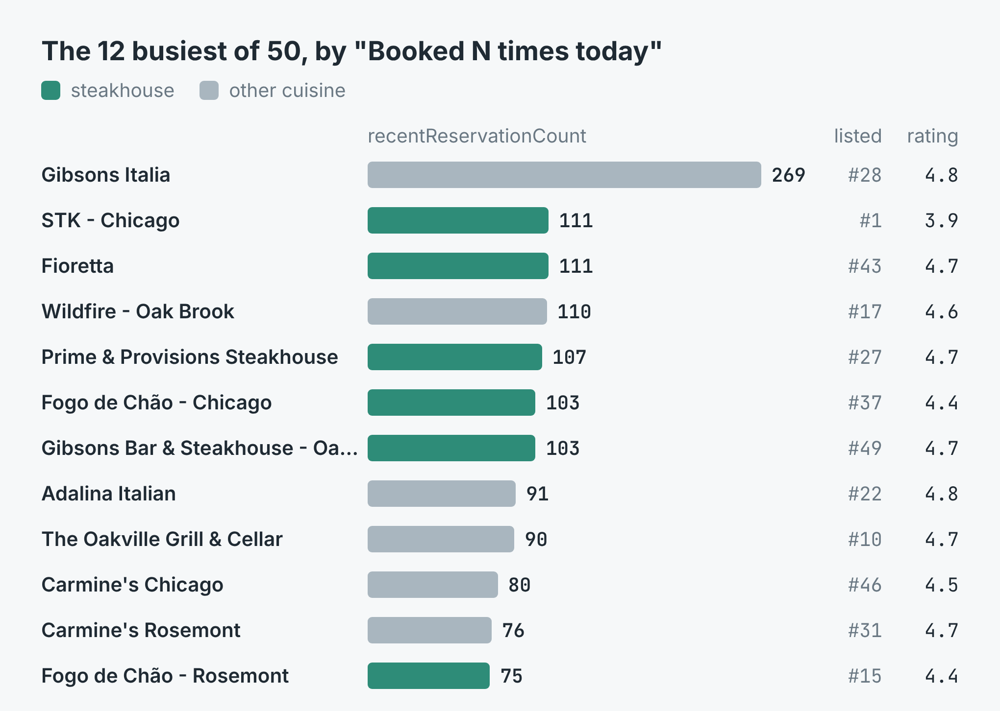
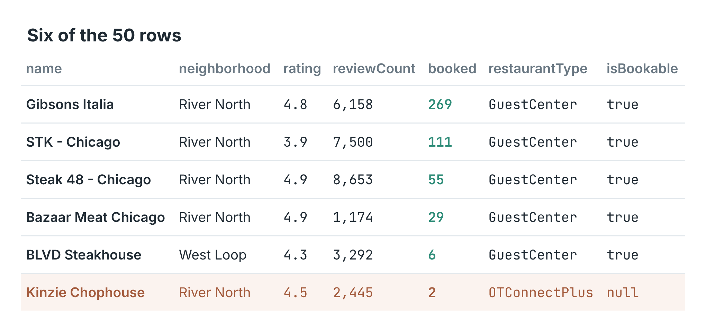
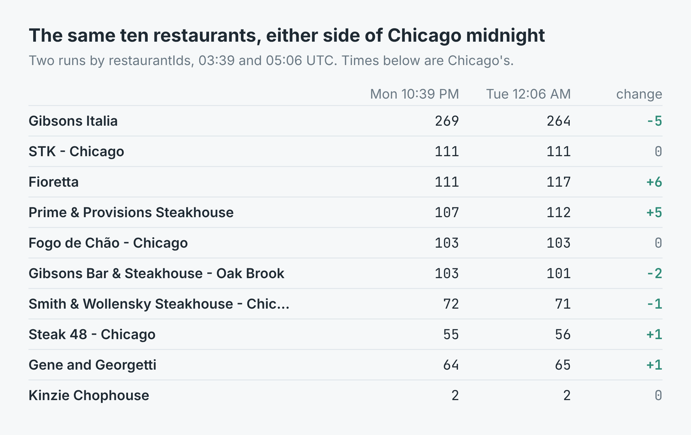

How to tell how busy a restaurant is from OpenTable (50 steak restaurants in Chicago, ranked)
I wrote this with an AI assistant. The runs, numbers and code are real, and I checked them.

At 10:37 on a Monday night, Chicago time, I searched OpenTable for "steak" in Chicago. The busiest of the 50 restaurants it gave back wasn't a steakhouse. It was Gibsons Italia, booked 269 times. The next two, STK and Fioretta, had 111 each. OpenTable had listed Gibsons Italia 28th and Fioretta 43rd.
That number is on OpenTable's listings, in small type: "Booked 269 times today". It's the cheapest honest measure of how busy a restaurant is that I know of. Nobody has to infer it. The restaurant's own listing states it.
Getting the number out
I build and run an OpenTable scraper on Apify. Give it a search and a city and it reads OpenTable's search page, which holds up to 50 restaurants, and returns one row for each: address, phone, coordinates, neighbourhood, cuisine, price band, rating, review count, and the booking figure as recentReservationCount. No OpenTable account, cookie or key.
import { ApifyClient } from 'apify-client';
const client = new ApifyClient({ token: process.env.APIFY_TOKEN });
const run = await client.actor('simple.actor/opentable-restaurants')
.call({ term: 'steak', city: 'Chicago', maxItems: 50 });
const { items } = await client
.dataset(run.defaultDatasetId).listItems();
items.sort((a, b) =>
b.recentReservationCount - a.recentReservationCount);
for (const r of items) console.log(r.recentReservationCount, r.name);
The full script, which writes a CSV, and a Python version are in the repo.
The run took 69 seconds and returned 50 rows, every one with a phone number and a booking count. Between them they had been booked 2,796 times. The median was 53.

The 12 busiest of the 50. Teal is a steakhouse. "Listed" is where the restaurant sat in OpenTable's own order.Stars don't tell you who is full
The ratings ran from 3.9 to 4.9, a narrow band, and they said very little about bookings. STK Chicago had the lowest rating of all 50, 3.9, and was joint second busiest. The three rated 4.9 had 29, 42 and 55. Review counts said a bit more: Gibsons Italia's 6,158 is a lot, but Smith & Wollensky had 9,965 reviews and 72 bookings.

Six of the 50 rows. The last one needs reading twice.OpenTable's order didn't follow bookings either. Of the seven restaurants with 100 or more, only STK was in the first ten it listed. Gibsons Bar & Steakhouse in Oak Brook, with 103, was 49th of 50. If you only look at the top of the page, you miss most of the busy rooms.
Watching the same places
To track restaurants over time you don't want a search at all. You want the same list every time. Give the scraper restaurantIds and it reads each restaurant's own OpenTable page instead, which carries the same record. I took ten of the Chicago IDs and read them twice: at 10:39 pm on Monday, and again at 12:06 am on Tuesday, just after Chicago's midnight.
Despite the "today" in the label, nothing reset. Not one of the ten dropped to zero, or anywhere near it. Gibsons Italia went from 269 to 264, Fioretta from 111 to 117, Prime & Provisions from 107 to 112. Three didn't move at all. The figure behaves like a rolling count over the last stretch of time, not a tally since midnight, so compare a restaurant with itself at the same hour and weekday rather than waiting for a daily zero.

The same ten restaurants read by ID, either side of midnight in Chicago.What it cost
The listing charges $0.0125 a run and $0.0003 a restaurant, with Apify's platform costs included. The search came to $0.0125 + 50 × $0.0003 = $0.0275. Each run of the ten IDs was $0.0125 + 10 × $0.0003 = $0.0155, and the two took 6 seconds and 39 seconds. The start charge isn't made if the search page couldn't be read.
What the count won't tell you
Kinzie Chophouse is the row that needs care. It shows 2 bookings, which reads like an empty room, but its record type is OTConnectPlus, not the GuestCenter every other row carries. The scraper hasn't measured that type, so it says isBookable: null rather than guess. Check restaurantType before you treat a low number as a quiet restaurant.
The search is OpenTable's, not mine. "Steak" in Chicago brought back 21 places that aren't steakhouses (8 Italian, 6 American, 3 seafood, 4 others) and 17 outside the city itself, 9 of them in Oak Brook. Filter on cuisine and city if you want only steakhouses in Chicago.
One search is one page, so it stops at 50. A whole city's restaurants take several searches, by cuisine or by neighbourhood.
The code is in simple-actor/opentable-scraper, in Node and Python. Both take a search and a city on the command line and write a CSV, busiest first, or take IDS= for a fixed list. The scraper is OpenTable Scraper on Apify. Put in your own cuisine and your own town, and if you run it on a schedule, read the same IDs at the same hour each week.